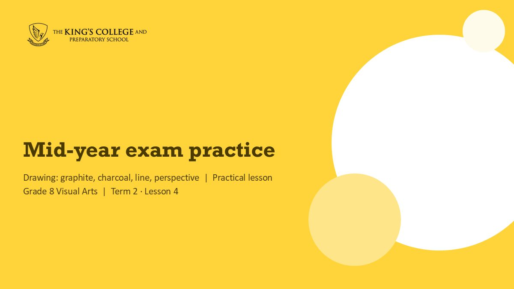

Term 3 · Lesson 3 · Practical and theory lesson
South African art: Gerard Sekoto
Start here
Today I will
- Today I will finish my textured-and-smooth drawing
- Today I will learn about the South African artist Gerard Sekoto
- Today I will analyse a Sekoto painting with the five levels
Think first
Look at this street scene. What time of day is it, and what do you think the people are doing?
Words to Know
| Word | Meaning |
|---|---|
| South African art | Art made in South Africa or by South African artists, from San rock art to the present day. |
| Context | The time, place, culture and events in which an artwork was made. |
| Township | An area on the edge of a town or city where black South Africans were forced to live under segregation and apartheid. |
| Expressive colour | Colour chosen to show feeling and mood rather than exactly what the eye sees. |
| Mood | The feeling or atmosphere an artwork creates, such as calm, joyful or tired. |
Slides

Notes
Sekoto's life and townships scenes; analysing one of his paintings with the five levels.
Gerard Sekoto's story
- Early life: Born in 1913 at Botshabelo mission station near Middelburg, in what is now Mpumalanga; he trained and worked as a teacher.
- Painting township life: From about 1938 he painted everyday life in Sophiatown, then District Six in Cape Town and Eastwood in Pretoria.
- A first: His Yellow Houses, a street in Sophiatown, was the first work by a black artist bought by the Johannesburg Art Gallery.
- Paris: In 1947 he left for Paris and lived in France for the rest of his life; he died there in 1993.
What to look for in Sekoto's work
- Colour: Warm, strong, expressive colour and bright light.
- People: Ordinary people at work, at home, playing music, walking in the street.
- Rhythm: In Song of the Pick, a row of workers swing their picks together, like a beat in music.
- Mood: Often warm and lively, sometimes tired or sad: look at faces and poses.
Remember
Sekoto painted ordinary life with dignity: look at the people, then at the colour.
Practical
You need: Assessed drawing, pencils, objects and lamp; Activity Book
Finish the drawing, then analyse a Sekoto painting
- Finish your textured-and-smooth drawing (20 minutes): darkest darks, sharp highlights, cast shadows, clean edges.
- Sign it lightly, put it in your portfolio file and pack away the pencils.
- Look at the Sekoto painting on the board for one silent minute.
- In the Activity Book, write a short paragraph for each of the five levels.
- In Level 2, name at least two elements and one principle and their effect.
- In Level 4, use one fact about Sekoto's life and time.
Assessment
Term 3 Assessment due (Thursday 23 September; Friday is Heritage Day).
Test yourself
- Name one place where Sekoto painted township life.
- Why is his Yellow Houses painting important?
- In which level of the analysis do facts about Sekoto's life belong?
Show answers
1. Sophiatown, District Six or Eastwood (Pretoria). 2. It was the first work by a black artist bought by the Johannesburg Art Gallery. 3. Level 4: context (zeitgeist).
Finished early?
Mood in one figure
Sekoto shows feeling through faces and poses. Try it yourself.
- Draw two simple stick-figure or gesture sketches of a person in your visual journal.
- Give the first a pose that looks tired or sad.
- Give the second a pose that looks lively or joyful.
- Write one word for the mood of each and the colours you would choose for it.